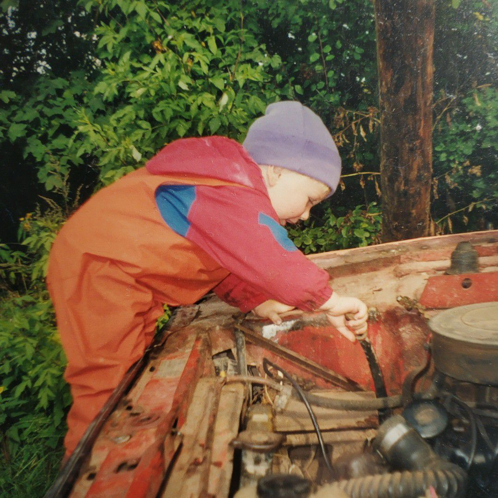
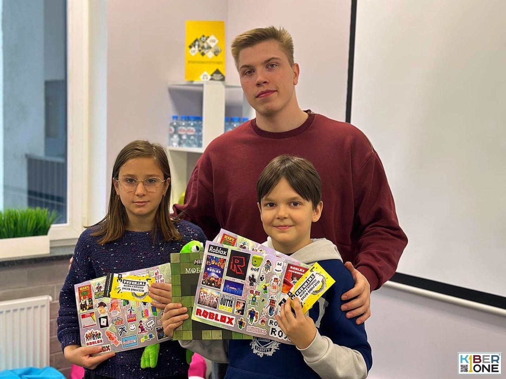

Федоричев Лев
Full-stack разработчик, специализирующийся на web и мобильной приложениях.
Разработал и поддерживаю проекты в сфере образования.
Имею весь необходимый инструментарий для создания высококачественных приложений
и удовлетворения потребностей клиентов.
Основной репозиторий: GitFlic
Основной репозиторий: GitFlic
Непрерывное развитие
Я студент четвертого курса
Санкт-Петербургского государственного архитектурно-строительного
университета направления прикладная математика и информатика.
Программа вуза сконцентрирована на С++ разработке и среде Matlab.
Большую часть своих навыков я получил читая статьи, книги и обучаясь самостоятельно.
Прошел курсы профессиональной подготовки по разработке на Spring.
С первого курса изучал разработку сайтов и мобильную разработку на Java.
Летом 23-его года завершил курсы по React.
Не разрабатывал, а разработал
Довожу начатое до конца. Проявляю инициативу. Не стесняюсь ошибок и стремлюсь к их искоренению.
Задачи, которые я ставлю перед собой позволяют мне мыслить нестандартно.
Комфортно работаю как один, так и в команде.
Обучаемость
Аналитический склад ума
Целеустремленность
Самодисциплина
Терпение и настойчивость
Открытость и коммуникабельность
Трудолюбие
Организованность
Скрупулезность и внимательность к деталям
Креативность и изобретательность
Многозадачность и умение управлять временем
Готовность к постоянному обучению и самосовершенствованию
Стрессоустойчивость
Умение работать в команде
Стремление к автоматизации и оптимизации процессов
Уважение к срокам и дедлайнам
Чувство ответственности и готовность нести ответственность
Строгая дисциплина и самодисциплина


Преподавание
Главное мое увлечение - преподавание.
Я старший Тьютор в детской школе программирования. Мне нравится наблюдать за тем, как они
развиваются
и совершают все новые и новые подвиги в борьбе со сложными алгоритмами.
Также я связан и с высшей школой. Мною поставлено несколько курсов,
в том числе по мобильной разработке. Написал пособие по Java concurrency.
Работа и стажировки
По результатам всероссийской олимпиады проходил стажировку в компании АР Софт на позиции Spring
разработчика.
Реализовал модуль с разнообразной статистикой изменений производственных деталей.
Разработанный модуль можно посмотреть тут.
Больше года работал на позиции web-разработчика в университете.
За это время успел разработать систему отслеживания абитуриентом его позиции в конкурсе на
поступление
и доработать несколько сайтов университета.
Учебные проекты
За время обучения я успел разработать следующие pet-проекты:
-
Облачное хранилище
Java Spring Boot Spring Security Docker Docker compose JPA JUnit TestContainers
-
Сервис объявлений SimplePost
JavaScript Node.js nedb express express-session nedb-promises-session-store uuidv4 MVC
-
Сервис по переводу денег
Java Spring Boot Docker JPA
-
VR DAYS (Командная разработка)
Html Sass JavaScript nodemailer
-
Расписание вуза
Dart Flutter Dio Hive